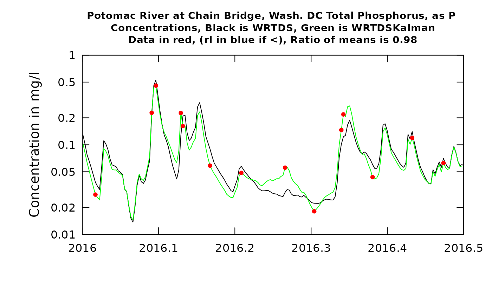

Introduction
This document provides a basic set of instructions for calculating WRTDSKalman estimates of both concentration and flux (or “load”). There are now two published papers that lay out the motivation for using this approach (called “WRTDS_K”” in those papers), describe the mathematics, and show the results compared to other methods. Those two publications can be found at: https://pubs.er.usgs.gov/publication/sir20195084 and https://agupubs.onlinelibrary.wiley.com/doi/full/10.1029/2019WR025338 .
Why would one use WRTDSKalman?
The most important thing to know is that these are intended for use for providing the best possible estimates of the actual fluxes on each day, or month, or season, or year in the record. (This discussion will emphasize their use in estimating fluxes, but the same thing can be said of the concentration record.) It has been shown in the papers mentioned above that they will provide more accurate estimates of flux than are provided by the flux values in the original WRTDS model. They are not intended for use in evaluating trends, which we would do using the flow-normalized flux values.
Here are some examples of when these WRTDSKalman estimates would be most appropriate.
Say we have a model (statistical or deterministic) that describes how a receiving water body (such as a reservoir, lake or estuary) responds to the inputs of water, nutrients, as well as air temperature, wind, etc. The response might be chlorophyl concentrations or dissolved oxygen in the receiving water body. For running such a model to evaluate its performance we would want to use the WRTDSKalman estimates.
Say we are interested in the mass balance of some material in a lake or reservoir and we want to make computations at a daily time step of the change in storage of that material. We will do that by accumulating the sum of the inputs minus the sum of the outputs. This record would represent the change in storage. The assumption here is that both of these records are produced by WRTDS models (at the upstream and downstream points) but this concept can work when the outputs are estimated by some other means. (As an aside we know that a WRTDS model can provide very poor estimates of outflows from a reservoir because the discharge is not really a representation of the state of the system but is really a decision variable. We have work underway in 2020 that deals with that issue).
Say we have concerns about the harmful effects of some constituent in the river itself and wish to know the mean concentration over a period of days or weeks. The WRTDSKalman values would be the most appropriate to use to describe the levels that organisims in the river have been exposed to.
We are producing “Nowcasts” of inputs to a receiving water body. We are using it to assist water resources managers to make decisions about releases or diversions or levels of treatment that may be needed for the expected quality of the water currently or over the next few days. We may also want it as a matter of public information and environmental awareness. If we are working towards reducing nutrient loads in the river we may want to report where things stand as a function of current flow conditions and put out a number, e.g. “today’s estimated load of phosphorus from the watershed is 2 metric tons” or “our estimate of last month’s load of nitrogen is 50 metric tons”. These estimates would be produced by using the most up-to-date sample data that are available and the most up-to-date discharge data (typically less than 24-hours old) and estimate the WRTDS model and then compute the WRTDSKalman estimates. It is important that when such estimates are made that it be clear that these numbers are subject to substantial revision once a few more data points are added to the data set.
None of these are related to the detection or assessment of trends in concentration or flux. For these purposes the flow normalized concentration or flow normalized flux remain the preferred output to consider because they remove the noise due to the interannual variations in discharge.
There is one drawback to the WRTDSKalman estimates and that is the fact that running the computations on a given set of data will produce slightly different results each time it is run. This is due to the fact that the computations involve the use of a random number generator. Using a large number of iterations will result in very small variations between results. The default number of iterations is 200 which can take a minute or two of computer time and result in only minimal variations in results. The names of the variable used in the code “GenFlux” and “GenConc” use the prefix “Gen” as a reminder that their computation involves the use of a random number generator.
In summary Use the WRTDSKalman when you want the best estimates for a given day, month, season, or year. Use the Flow Normalized values when you want to describe trends.
What one needs, in order to run this are the following items:
- Install the development version of
EGRETvia theremotespackage (see above). - A data set which must already be in the form of an EGRET workspace containing an eList that has all four components of an eList (INFO, Daily, Sample, surfaces). That is, it must be the data and a WRTDS model based on that data that is already estimated. The data set must be in the form of an “.RData” file that contains an eList, Nothing else needs to be in that file but if there is other stuff, that’s ok. The data set can contain multiple concentration values on a given day and it can also contain censored data (“less than values”). The two papers referenced above do not consider either of these special situations, but the software in this package is able to properly handle data sets that have either or both of these properties. The way these issues are handled is described in a section at the end of this document.
library(EGRET)
load("ChainBridge.TP.RData")
# now we will run the WRTDSKalman estimation (using the defaults for now)
eList_K <- WRTDSKalman(eList, niter = 200)## % complete:
## 0 1 2 3 4 5 6 7 8 9 10
## 11 12 13 14 15 16 17 18 19 20
## 21 22 23 24 25 26 27 28 29 30
## 31 32 33 34 35 36 37 38 39 40
## 41 42 43 44 45 46 47 48 49 50
## 51 52 53 54 55 56 57 58 59 60
## 61 62 63 64 65 66 67 68 69 70
## 71 72 73 74 75 76 77 78 79 80
## 81 82 83 84 85 86 87 88 89 90
## 91 92 93 94 95 96 97 98 99 ## Date Q Julian Month
## Min. :1984-10-01 Min. : 4.927 Min. :49216 Min. : 1.000
## 1st Qu.:1993-04-01 1st Qu.: 84.951 1st Qu.:52320 1st Qu.: 4.000
## Median :2001-10-01 Median : 194.820 Median :55425 Median : 7.000
## Mean :2001-10-01 Mean : 340.233 Mean :55425 Mean : 6.523
## 3rd Qu.:2010-04-01 3rd Qu.: 395.020 3rd Qu.:58530 3rd Qu.:10.000
## Max. :2018-10-01 Max. :9231.292 Max. :61634 Max. :12.000
##
## Day DecYear MonthSeq waterYear i
## Min. : 1.0 Min. :1985 Min. :1618 Min. :1985 Min. : 1
## 1st Qu.: 93.0 1st Qu.:1993 1st Qu.:1720 1st Qu.:1993 1st Qu.: 3106
## Median :184.0 Median :2002 Median :1822 Median :2002 Median : 6210
## Mean :183.8 Mean :2002 Mean :1822 Mean :2002 Mean : 6210
## 3rd Qu.:275.0 3rd Qu.:2010 3rd Qu.:1924 3rd Qu.:2010 3rd Qu.: 9314
## Max. :366.0 Max. :2019 Max. :2026 Max. :2019 Max. :12419
##
## LogQ Q7 Q30 yHat
## Min. :1.595 Min. : 8.572 Min. : 12.14 Min. :-5.0036
## 1st Qu.:4.442 1st Qu.: 89.400 1st Qu.: 104.93 1st Qu.:-3.3098
## Median :5.272 Median : 208.088 Median : 241.08 Median :-2.9232
## Mean :5.255 Mean : 339.743 Mean : 338.98 Mean :-2.9099
## 3rd Qu.:5.979 3rd Qu.: 420.707 3rd Qu.: 471.02 3rd Qu.:-2.5544
## Max. :9.130 Max. :3868.890 Max. :2079.02 Max. : 0.5305
## NA's :6 NA's :29
## SE ConcDay FluxDay FNConc
## Min. :0.2959 Min. :0.007268 Min. : 21.5 Min. :0.02874
## 1st Qu.:0.4583 1st Qu.:0.042617 1st Qu.: 343.1 1st Qu.:0.06433
## Median :0.5447 Median :0.063900 Median : 925.8 Median :0.07963
## Mean :0.5356 Mean :0.080152 Mean : 4831.6 Mean :0.08105
## 3rd Qu.:0.6091 3rd Qu.:0.092054 3rd Qu.: 2726.8 3rd Qu.:0.09553
## Max. :0.7217 Max. :1.882430 Max. :1349413.9 Max. :0.19000
##
## FNFlux GenFlux GenConc
## Min. : 255.9 Min. : 11.2 Min. :0.005952
## 1st Qu.: 2018.7 1st Qu.: 301.1 1st Qu.:0.033758
## Median : 3743.6 Median : 797.1 Median :0.054051
## Mean : 4979.2 Mean : 4136.4 Mean :0.071738
## 3rd Qu.: 6372.4 3rd Qu.: 2310.5 3rd Qu.:0.085957
## Max. :43441.1 Max. :1577062.6 Max. :2.200000
## The object being created here is a new eList, with a modified Daily data frame. It looks just like the original Daily but with two extra columns added. What are the extra columns?
GenFlux is the WRTDSKalman estimate of the flux for each day (in kg/day)
GenConc is the WRTDSKalman estimate of the concentration for each day (in mg/L)
Summarizing results at an annual time step
Now we can take the results from eList_K and compute annual flux values. We will do that for the regular WRTDS and for WRTDSKalman. We can also do these computations for some period of analysis other than the water year, but for now, we will just show the water year computations. The function used is called setupYears and it produces a data frame called AnnualResults.
AnnualResults <- setupYears(eList_K$Daily)
plotWRTDSKalman(eList_K)

prettyAnnual <- AnnualResults[,c("DecYear", "Q",
"Conc", "GenConc", "Flux", "GenFlux")]
kable(prettyAnnual, digits = c(0, 0, 3, 3, 0, 0), caption = "Units are cubic meters per second, milligrams per Liter, and metric tons per year")| DecYear | Q | Conc | GenConc | Flux | GenFlux |
|---|---|---|---|---|---|
| 1985 | 229 | 0.095 | 0.102 | 2292 | 2453 |
| 1986 | 336 | 0.103 | 0.086 | 9837 | 8927 |
| 1987 | 318 | 0.088 | 0.089 | 3862 | 3945 |
| 1988 | 274 | 0.079 | 0.080 | 3545 | 4224 |
| 1989 | 308 | 0.083 | 0.065 | 3530 | 2857 |
| 1990 | 250 | 0.073 | 0.066 | 1917 | 1838 |
| 1991 | 341 | 0.078 | 0.071 | 3893 | 2928 |
| 1992 | 219 | 0.056 | 0.045 | 1515 | 1239 |
| 1993 | 478 | 0.079 | 0.068 | 6066 | 4920 |
| 1994 | 516 | 0.087 | 0.066 | 6771 | 4936 |
| 1995 | 229 | 0.064 | 0.056 | 1846 | 1605 |
| 1996 | 673 | 0.134 | 0.106 | 17016 | 14419 |
| 1997 | 409 | 0.100 | 0.083 | 5226 | 4420 |
| 1998 | 567 | 0.121 | 0.086 | 10616 | 6883 |
| 1999 | 144 | 0.071 | 0.087 | 1102 | 1382 |
| 2000 | 236 | 0.089 | 0.100 | 2222 | 2765 |
| 2001 | 218 | 0.079 | 0.091 | 1943 | 2925 |
| 2002 | 114 | 0.056 | 0.063 | 841 | 1306 |
| 2003 | 647 | 0.154 | 0.113 | 14522 | 10537 |
| 2004 | 503 | 0.123 | 0.078 | 8835 | 5279 |
| 2005 | 344 | 0.083 | 0.062 | 4611 | 3335 |
| 2006 | 248 | 0.063 | 0.065 | 2291 | 2521 |
| 2007 | 297 | 0.062 | 0.059 | 3004 | 3141 |
| 2008 | 296 | 0.059 | 0.058 | 3221 | 2715 |
| 2009 | 252 | 0.054 | 0.059 | 2449 | 2863 |
| 2010 | 370 | 0.066 | 0.064 | 5680 | 5385 |
| 2011 | 390 | 0.075 | 0.064 | 7139 | 5360 |
| 2012 | 304 | 0.063 | 0.051 | 2703 | 1955 |
| 2013 | 331 | 0.063 | 0.053 | 3841 | 3269 |
| 2014 | 385 | 0.070 | 0.064 | 4747 | 4656 |
| 2015 | 243 | 0.047 | 0.046 | 1777 | 1860 |
| 2016 | 316 | 0.059 | 0.058 | 3229 | 3068 |
| 2017 | 249 | 0.047 | 0.042 | 1957 | 1861 |
| 2018 | 529 | 0.100 | 0.092 | 10096 | 8738 |
The content of AnnualResults is fairly obvious.
DecYear is the mean day of the year for the period of analysis, for example, water year 2007 would have a mean day of 2007.247 (end of March of 2007).
Q is the mean discharge in m^3/s.
Conc is the mean value of concentration for the year from the regular WRTDS model, in mg/L.
GenConc is the mean value of concentration for the year from the WRTDSKalman model, in mg/L.
Flux is the mean of the daily flux values from the regular WRTDS model, in units of metric tons per year (same as 10^3 kg / yr).
GenFlux is the mean of the daily flux values from the WRTDSKalman model, in units of metric tons per year (same as 10^3 kg / yr).
The first graph compares the time series of the two flux records: WRTDS in red and WRTDSKalman in green. This graph is fairly typical of what we have seen in a number of studies so far. There are a number of years in which the two estimates are practically identical (e.g. 2014, 2015, 2016, 2017) but there are a few cases where they diverge significantly (e.g. 1996, 1998, 2006, and 2018). In this example, in those cases the WRTDSKalman estimate is substantially lower than the WRTDS estimate.
The second graph is just another way to look at these same results, but as a scatter plot of results from the two methods. What we see is a tendency for a fair number of years to plot close to the 1:1 line but four of them are substantially below the line (meaning their WRTDSKalman estimates are lower than their WRTDS estimates).
Seeing this, we’d like to dig in a bit and see what’s going on.
Looking at parts of the record to see how WRTDS and WRTDSKalman are working
We have a function that produces graphics that show, as a time series, the daily true values (for the days that have samples), the WRTDS estimates for every day, and the WRTDSKalman estimates for every day. We could plot the whole record, but the ups and downs of the curves would be so tight that we really couldn’t see what’s going on. So, we let the user pick a time slice to look at. It produces two plots, the first is for concentration (it is typically easier to see what is happening in the estimation with the concentration graphs) and the second is for flux (discharge plays such a big role here that the propagation of error from the concentrations gets somewhat obscured, but flux is, after all, what we are interested in here).
We will look at two examples here, in each case looking at about a half a year. The first case (the first half of 2016) is a period in which there was very good agreement between the estimates, and the second one (the second half of 1996) is a year with a large difference between the methods. Let’s see what those results look like.
plotTimeSlice(eList_K, start = 2016, end = 2016.5, conc = TRUE)
plotTimeSlice(eList_K, start = 2016, end = 2016.5, conc = FALSE)
plotTimeSlice(eList_K, start = 1996.5, end = 1997, conc = TRUE)
plotTimeSlice(eList_K, start = 1996.5, end = 1997, conc = FALSE)
What can we learn from these figures? The first, which is the first half of 2016, we will start with the concentration graph. We see that there are 14 observed values (the red dots). The first observation in 2016 had a fairly small negative residual, meaning that the true value was slightly below the WRTDS estimate (the black line). The second observation shown (slightly less than one month later) was almost exactly correct. As a result of this, the WRTDSKalman estimates for a period of about 14 days after the first observation are all slightly less than the WRTDS estimate, but as we approach the second observation the two types of estimates become virtually identical. In the case with the largest error (the positive residual at about the middle of the period shown in the graph) we see that the residuals on either side of it were both negative. In this case the WRTDSKalman curve tends to approach the WRTDS curve midway through the periods between observations. The errors throughout this period are small and they don’t show a tendency to persist as a long string of positive values or negative values. The ratio of the mean value of the WRTDSKalman estimates to the WRTDS estimates during this time period is 0.99. In other words, they are very similar on average. When we look at the next graph, showing the two flux estimates we wee very much the same pattern but the differences look more limited simply because of the large variations in flux that are a result of variation in discharge. The ratio of the two estimates is somewhat farther from 1.0 (it is 0.96) but still the differences are minor. The upshot of all of this is that the residuals information doesn’t make much difference during this half year in WRTDSKalman results and we really don’t change our estimate by much.
Now, contrast this with the result from the second half of 1996. The high values shown here around 1996.7 come from a flood, about a 20-year recurrence interval event. The WRTDS model and the three observations near the peak of the event agree quite well. But, as we move forward over the next few months the observations tend to be much lower than the WRTDS model would predict. The consequence of this is that the WRTDSKalman estimates are dramatically lower than the WRTDS estimates (as much as an order of magnitude). These results are not surprizing. The relatively accurate result at the time of very high discharge is related to the fact that there are few observations overall in the dataset at such high discharges, so these observations do a good job of guiding the WRTDS to a highly accurate model. But, the high flow event likely had a consequence of depleting the watershed of highly available phosphorus, so at more typical discharges the concentrations were a good deal lower than the model expects them to be (because in the more moderate discharge range there are observations from many other years besides this flood year). As such the WRTDSKalman estimates for this period are much lower than the regualr WRTDS estimates (a ratio of 0.64). The graph for flux looks generally similar but the ratio is somewhat better (0.71) because the two methods are relatively close on the high flow (and hence high flux) days.
As a generalization we can say that WRTDSKalman will result in large adjustments in flux when at least one of two things happen: 1) there is a strong persistence of the residuals (long runs of positives or long runs of negatives), or 2) when there are samples collected on or close to the days of maximum flux and they show large absolute residuals.
One final note about the graphs. In the title it says: “Ratio of means is xx”. This ratio of WRTDSKalman estimates to WRTDS estimates is specific to the time slice shown in the plot (not the whole record being estimated).
Two options available (setting rho and setting niter)
One of the things that the user must select is the rho value. We don’t have a strong theoretical basis for selecting the right value of rho, although our research has shown that the results are not highly sensitive to it. In the paper published in Zhang and Hirsch (2019) (see the second URL near the start of this document) we do make some generalizations about the selection of rho. We found that for nitrate a slightly higher rho value (such as 0.95) may be better than for other constitutents such as TP, OrthoP, Suspended Sediment, or Chloride for which values like 0.85 or 0.9 may be better. The somewhat different behavior for nitrate is explained by the fact that at many sites there are some other factors probably related to denitrification and the discharge and seasonal terms do not have a great amount of explanatory power in the WRTDS model. As such, placing more reliance on the results of samples that are close in time is appropriate. One can experiment with different values of rho because it is an argument in the WRTDSKalman function.
We can re-run the analysis with rho of 0.85 and see how much difference it makes. The table shown here lists the percent difference in annual values that results.
eList_2 <- WRTDSKalman(eList, rho = 0.85, niter = 200)## % complete:
## 0 1 2 3 4 5 6 7 8 9 10
## 11 12 13 14 15 16 17 18 19 20
## 21 22 23 24 25 26 27 28 29 30
## 31 32 33 34 35 36 37 38 39 40
## 41 42 43 44 45 46 47 48 49 50
## 51 52 53 54 55 56 57 58 59 60
## 61 62 63 64 65 66 67 68 69 70
## 71 72 73 74 75 76 77 78 79 80
## 81 82 83 84 85 86 87 88 89 90
## 91 92 93 94 95 96 97 98 99 ## [1] 0.85## [1] 200
AnnualResults2 <- setupYears(eList_2$Daily)
AnnualResults2 <- AnnualResults2[,c("GenConc", "GenFlux")]
Ratios <- (AnnualResults2 - AnnualResults[, c("GenConc", "GenFlux")]) / AnnualResults[, c("GenConc", "GenFlux")]
row.names(Ratios) <- round(AnnualResults$DecYear, 0)
kable(Ratios*100, digits = 1, caption = "Percent difference with a change in rho from 0.90 to 0.85")| GenConc | GenFlux | |
|---|---|---|
| 1985 | -0.1 | -0.3 |
| 1986 | 3.9 | 2.8 |
| 1987 | 0.3 | -1.0 |
| 1988 | -1.3 | -2.8 |
| 1989 | 1.8 | 3.0 |
| 1990 | 2.8 | 2.2 |
| 1991 | 3.2 | 5.9 |
| 1992 | 2.9 | 4.2 |
| 1993 | 0.0 | 1.2 |
| 1994 | 2.9 | 3.2 |
| 1995 | 3.1 | 2.6 |
| 1996 | 2.4 | 1.3 |
| 1997 | 2.2 | 1.6 |
| 1998 | 3.8 | 5.4 |
| 1999 | -2.1 | -4.3 |
| 2000 | 0.6 | 0.5 |
| 2001 | -0.1 | -1.4 |
| 2002 | -2.1 | -3.8 |
| 2003 | 5.8 | 6.3 |
| 2004 | 12.4 | 15.1 |
| 2005 | 7.2 | 6.8 |
| 2006 | -0.7 | -0.2 |
| 2007 | 2.7 | 1.2 |
| 2008 | -1.2 | -0.7 |
| 2009 | -1.5 | -1.4 |
| 2010 | 1.1 | 2.6 |
| 2011 | 0.7 | 1.8 |
| 2012 | 5.1 | 6.1 |
| 2013 | 2.8 | 1.5 |
| 2014 | -0.4 | -1.1 |
| 2015 | 0.9 | 1.1 |
| 2016 | 2.5 | 2.7 |
| 2017 | 1.9 | 1.4 |
| 2018 | 0.5 | 0.8 |
What we see here is that the change in rho from 0.9 to 0.85 makes less than a 10% difference in almost all of the years and under 5% in most years.
Setting the number of iterations to 200 (the default) seems to be sufficient. We can set a different random number seed and see how much difference it makes in the results.
eList3 <- WRTDSKalman(eList, niter = 200, seed = 1)## % complete:
## 0 1 2 3 4 5 6 7 8 9 10
## 11 12 13 14 15 16 17 18 19 20
## 21 22 23 24 25 26 27 28 29 30
## 31 32 33 34 35 36 37 38 39 40
## 41 42 43 44 45 46 47 48 49 50
## 51 52 53 54 55 56 57 58 59 60
## 61 62 63 64 65 66 67 68 69 70
## 71 72 73 74 75 76 77 78 79 80
## 81 82 83 84 85 86 87 88 89 90
## 91 92 93 94 95 96 97 98 99
AnnualResults3 <- setupYears(eList3$Daily)
AnnualResults3 <- AnnualResults3[,c( "GenConc", "GenFlux")]
Ratios <- (AnnualResults3 - AnnualResults[, c("GenConc", "GenFlux")]) / AnnualResults[, c("GenConc", "GenFlux")]
row.names(Ratios) <- round(AnnualResults$DecYear, 0)
kable(Ratios*100, digits = 1, caption = "Percent difference with using a different random number seed")| GenConc | GenFlux | |
|---|---|---|
| 1985 | 0.1 | -0.3 |
| 1986 | 0.6 | 0.3 |
| 1987 | -0.9 | -3.1 |
| 1988 | -0.4 | -0.4 |
| 1989 | 0.1 | 0.5 |
| 1990 | 0.1 | -0.6 |
| 1991 | -0.3 | 0.0 |
| 1992 | 0.1 | -1.1 |
| 1993 | 0.0 | 0.4 |
| 1994 | -0.8 | -1.7 |
| 1995 | -0.4 | -0.9 |
| 1996 | -0.3 | -0.3 |
| 1997 | 0.4 | 0.6 |
| 1998 | 0.3 | 0.1 |
| 1999 | -0.9 | -2.1 |
| 2000 | 0.3 | 0.5 |
| 2001 | 0.2 | -0.5 |
| 2002 | -0.7 | -1.4 |
| 2003 | 1.0 | 0.7 |
| 2004 | 0.7 | 0.8 |
| 2005 | 0.0 | 0.0 |
| 2006 | -0.1 | -0.1 |
| 2007 | -0.2 | -1.3 |
| 2008 | 0.1 | -0.5 |
| 2009 | -0.9 | -0.5 |
| 2010 | -0.1 | -0.6 |
| 2011 | -0.1 | 0.2 |
| 2012 | -0.5 | -1.1 |
| 2013 | 0.2 | -0.1 |
| 2014 | -0.5 | -0.4 |
| 2015 | -0.4 | -0.5 |
| 2016 | 0.8 | 0.5 |
| 2017 | 0.5 | 0.3 |
| 2018 | -0.7 | -0.3 |
This table shows us that, at worst the individual annual fluxes differ by about 2% and most of them differ by less than 1% in successive runs with different seeds. The annual concentrations never differ by more than about 2%. This suggests that 200 is a sufficient number of iterations to run to obtain a stable result. For final calculations for publication one might want to specify niter = 500 or niter = 1000 in the call to WRTDSKalman, but the idea here is not perfection, but rather to make a reasonable adjustment of the flux record to account for the serial correlation of the residuals.
What about putting these results into the plotConcHist or plotFluxHist graphs
Typically when we do some type of trend study we may want to create graphic outputs showing the Flow Normalized values (connected by a line) and the estimated annual values (as dots). You may want to put the WRTDSKalman values on these graphs and this can now be done with the plotConcHist and plotFluxHist functions.
Here they are being used.
plotConcHist(eList_K, plotAnnual = FALSE, plotGenConc = TRUE)
plotFluxHist(eList_K, plotAnnual = FALSE, plotGenFlux = TRUE, fluxUnit = 8)
Computing monthly results
If monthly results, rather than annual results are desired they can be computed with the function calculateMonthlyResults. It doesn’t have any arguments for selecting units on flux, they will always be expressed as a monthly rate in units of kg/day. Here is an example of doing that and then preparing a simpler file to pass results to some other application or produce a graph.
monthlyResults <- calculateMonthlyResults(eList_K)
plot(monthlyResults$DecYear, monthlyResults$GenFlux/1000, type = "l", xaxs = "i", xlim = c(1980,2020), yaxs = "i", ylim = c(0,90), las = 1, tck = 0.02, xlab = "", ylab = "Flux, in metric tons per day", main = "Potomac River at Chain Bridge, Washington, DC\nTotal Phosphorus Flux, by Month")
Month <- monthlyResults$Month
Year <- monthlyResults$Year
DecYear <- monthlyResults$DecYear
GenFlux <- monthlyResults$GenFlux/1000
monthFluxOut <- data.frame(Month, Year, DecYear, GenFlux)
head(monthFluxOut)## Month Year DecYear GenFlux
## 1 10 1984 1984.790 0.8149879
## 2 11 1984 1984.874 1.6211947
## 3 12 1984 1984.957 3.7090700
## 4 1 1985 1985.042 1.4792508
## 5 2 1985 1985.123 8.2419764
## 6 3 1985 1985.204 2.6252565Operationalizing this in a batch job
The process after installing the development version of EGRET.
- load the workspace for a site
- give the command eList <- WRTDSKalman(eList)
- give the command AnnualResults <- setupYears(eList)
- then save the object AnnualResults
- plot the results plotWRTDSKalman(eList)
- the tables and graphs you will probably want can all be made from the content of Annual Results, and the meta data are all in the INFO object in the eList
- if the interest is in only one season of the year then modify the call to setupYears by adding the paStart and paLong arguments for the season you are interested in.
- note that the data frame AnnualResults has two attributes that tell the paStart and paLong, so you can always tell what you used as your period of analysis
How the code handles two kinds of special situations
The description in the two publications mentioned here accurately describes how the computations work in the situation where no days in the record have more than one observed value and where no censored data exist in the record. The following section describes how the code handles data sets that violate one or both of these constraints. You don’t really have to understand this to use the software, but for completeness we are describing how these situations are handled in the code.
Censored data (less than values)
In order to fill in estimates for all the days with no samples, we must have a known value on each of the sampled days. We use this known value to compute a residual on the sampled day. These known residuals on either side of a data gap are what initialize the AR(1) process that fills in all the missing values of residuals in the gap. It would be incorrect to set these censored values with the reporting limit (ConcHigh) and also incorrect to set these censored values to half the reporting limit (this would be ConcAve). The solution is this. Since we are estimating the entire time series of residuals using Monte Carlo simulation we can also use Monte Carlo methods to create an appropriate value for the sampled day. For each replicate of the whole time series we will generate random values for each of the censored sample days. We already have a function that allows us to generate these random realizations of the censored day concentration. It is the function in EGRET called makeAugmentedSample. What it does is that on each day with a censored value it defines a truncated log normal distribution and takes a random sample from that distribution to represent the unknown true value on that day. The truncated lognormal distribution is defined by the WRTDS model for that day. It uses estimates of the conditional mean of the log concentration and the conditional standard deviation of the log concentration and assumes that the conditional distribution of the logs is normal. The distribution is not the whole normal distribution, rather it is made up of the left hand tail of the distribution. The truncation point is at the log of the reporting limit for the data value. What this means is that for the censored day, we can create a Monte Carlo sample value of the log of concentration by sampling from that truncated normal distribution (which is specific to the conditions on that day). Note here that the random observation values generated here are NOT used to estimate the WRTDS model; that is done in the usual fashion using the censored sample information.
So now the data generation scheme is done in two phases for each iteration: First we fill in values for each of the censored days and these, combined with the uncensored values constitute the sample data set we will work from. Then we use the AR(1) process to fill in the missing days between all the sampled days. Then when we move on to the next iteration we start all over with estimating all the censored days again and then fill the gaps, etc.
When we plot these data sets using plotTimeSlice, when there are censored values they plot in the blue color and they are located randomly at a value less than or equal to the reporting limit (the rObserved value computed in makeAugmentedSample). The green line will not go through these points the way they do with the red points, because the WRTDSKalman estimates are based on multiple realizations of these rObserved values.
Multiple observations on a day
When a day has more than one observation (i.e. more than one sample value) the approach we use here is much the same as what we used in the censored value situation. What we need in order to generate the full WRTDSKalman record is a set of unique values for the sampled days. So, for any day with two or more samples we will randomly pick one of them and use it as an end point for the adjacent gap periods. Then once we pick it we generate the values between the sampled days regardless of whether the sample value used is a unique value for that day or if it is randomly selected from the multiple values observed on that day. Then on the next iteration we randomly select the values for these multiply sampled days and proceed with the AR(1) process to fill in between the sampled days. In the plot produced by plotTimeSlice all of the observations are shown as red dots. Thus if there are multiple sample values on a given day they will plot along a vertical line situated on that day. The green line will run through the average of these multiple sample values for that day.
What’s happening next
We aim to release this new version of EGRET by the end of the summer of 2020. Work is now (July 2020) underway on estimates of the uncertainty of these WRTDSKalman estimates of concentrations and loads. A method has been developed but still needs to undergo testing. Once that method has been verified we will disseminate it via the EGRETci package.
References
Lee, C.J., Hirsch, R.M., and Crawford, C.G., 2019, An evaluation of methods for computing annual water-quality loads: U.S. Geological Survey Scientific Investigations Report 2019–5084, 59 p., https://doi.org/10.3133/sir20195084.
Zhang, Q. and Hirsch, R.M., 2019. River water‐quality concentration and flux estimation can be improved by accounting for serial correlation through an autoregressive model. Water Resources Research. https://agupubs.onlinelibrary.wiley.com/doi/epdf/10.1029/2019WR025338